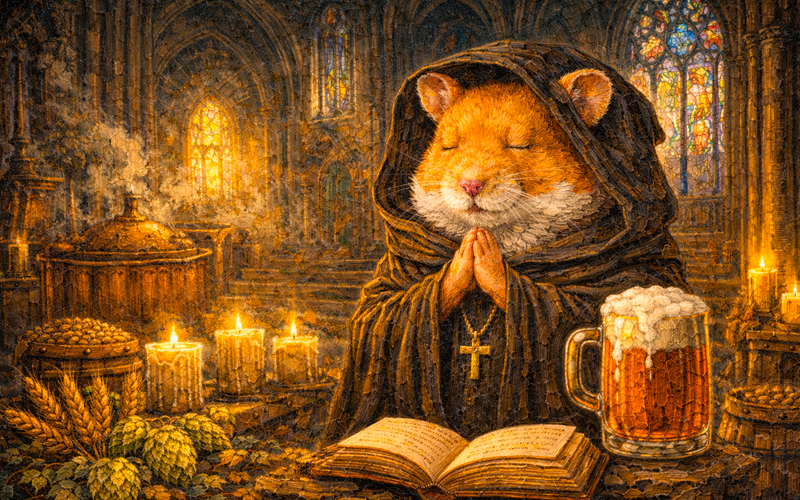
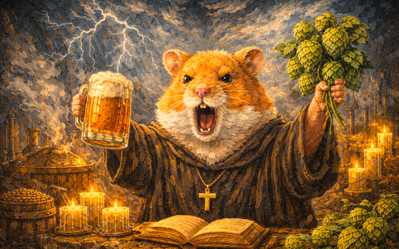
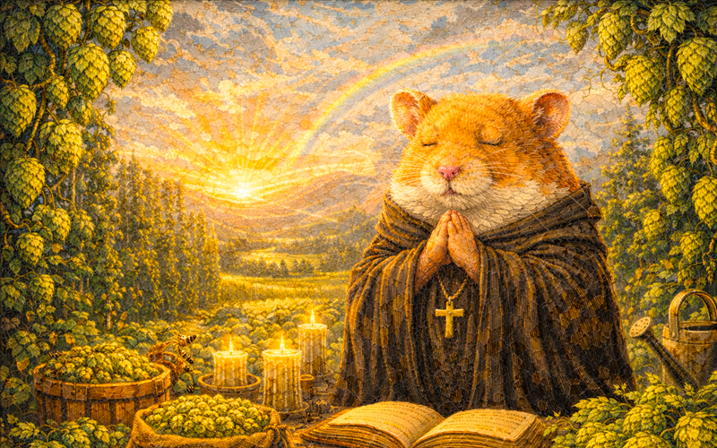

Новости
Учёный совет
Купить книгу
Наши награды
Исследования
Контакты
О НИИ
НОВОСТИ ТЕХ ВРЕМЁН
Песнопения, Истории, события

ПЕСНОПЕНИЕ
Пивоварусова заря: утренняя молитва души и пива

ПЕСНОПЕНИЕ
Грозный Пивоварус: молитва за вечное пиво и могучую силу хмеля

ПЕСНОПЕНИЕ
Жжение Хмеля: Молитва за Обильный Урожай
←